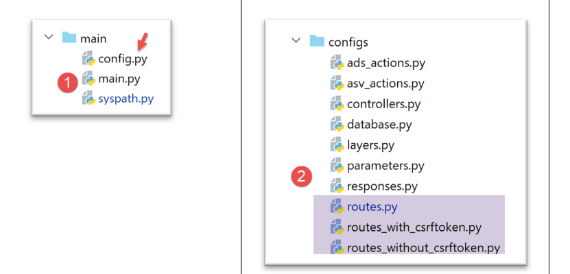
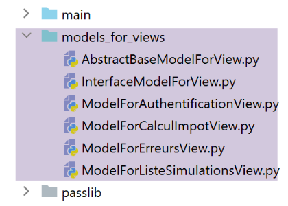
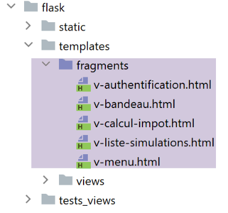
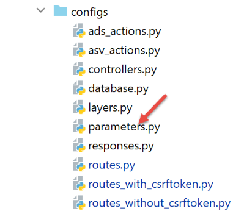
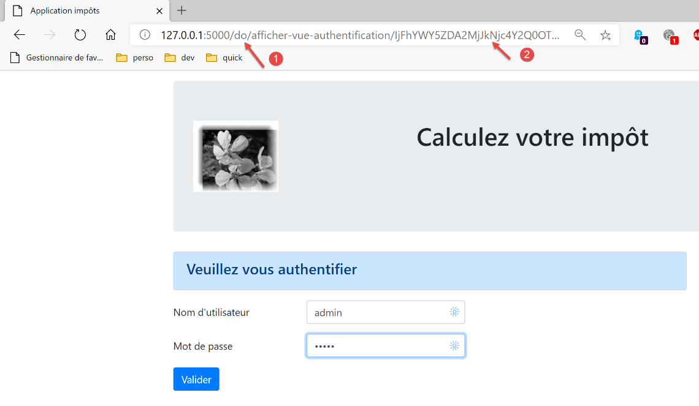
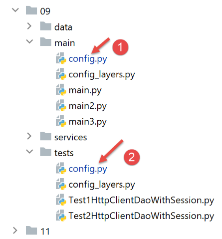

36. Exercice d’application : version 16
36.1. Introduction
Les URL de notre application sont pour l’instant de la forme [/action/param1/param2/…]. Nous voudrions pouvoir préfixer ces URL. Par exemple avec le préfixe [/do], nous aurions des URL de la forme [/do/action/param1/param2/…].
36.2. La nouvelle configuration des routes

- en [2], le calcul des routes va être modifié ;
- en [1], le fichier [config] est modifié pour refléter ce changement ;
La configuration [config] devient la suivante :
| def configure(config: dict) -> dict:
# configuration du syspath
import syspath
config['syspath'] = syspath.configure(config)
# paramétrage de l'application
import parameters
config['parameters'] = parameters.configure(config)
# configuration de la base de données
import database
config["database"] = database.configure(config)
# instanciation des couches de l'application
import layers
config['layers'] = layers.configure(config)
# configuration MVC de la couche [web]
config['mvc'] = {}
# configuration des contrôleurs de la couche [web]
import controllers
config['mvc'].update(controllers.configure(config))
# actions ASV (Action Show View)
import asv_actions
config['mvc'].update(asv_actions.configure(config))
# actions ADS (Action Do Something)
import ads_actions
config['mvc'].update(ads_actions.configure(config))
# configuration des réponses HTTP
import responses
config['mvc'].update(responses.configure(config))
# configuration des routes
import routes
routes.configure(config)
# on rend la configuration
return config
|
- lignes 37-39 : le module [routes] (ligne 38) s’occupe de configurer les routes (ligne 39) ;
Le fichier des routes sans jeton CSRF [configs/routes_without_csrftoken] évolue de la façon suivante :
| # dépendances
from flask import redirect, request, session, url_for
from flask_api import status
# configuration application
config = {}
# le front controller
def front_controller() -> tuple:
# on fait suivre la requête au contrôleur principal
main_controller = config['mvc']['controllers']['main-controller']
return main_controller.execute(request, session, config)
# racine de l'application
def index() -> tuple:
# redirection vers /init-session/html
return redirect(url_for("init_session", type_response="html"), status.HTTP_302_FOUND)
# init-session
def init_session(type_response: str) -> tuple:
# on exécute le contrôleur associé à l'action
return front_controller()
# authentifier-utilisateur
def authentifier_utilisateur() -> tuple:
# on exécute le contrôleur associé à l'action
return front_controller()
# calculer-impot
def calculer_impot() -> tuple:
# on exécute le contrôleur associé à l'action
return front_controller()
…
|
Le fichier a été débarrassé de ses routes. Il ne reste que les fonctions associées à celles-ci.
Les fichier des routes avec jeton CSRF [configs/routes_with_csrftoken] subit le même sort :
| # dépendances
from flask import redirect, request, session, url_for
from flask_api import status
from flask_wtf.csrf import generate_csrf
# configuration
config = {}
# le front controller
def front_controller() -> tuple:
# on fait suivre la requête au contrôleur principal
main_controller = config['mvc']['controllers']['main-controller']
return main_controller.execute(request, session, config)
# racine de l'application
def index() -> tuple:
# redirection vers /init-session/html
return redirect(url_for("init_session", type_response="html", csrf_token=generate_csrf()), status.HTTP_302_FOUND)
# init-session
def init_session(type_response: str, csrf_token: str) -> tuple:
# on exécute le contrôleur associé à l'action
return front_controller()
# authentifier-utilisateur
def authentifier_utilisateur(csrf_token: str) -> tuple:
# on exécute le contrôleur associé à l'action
return front_controller()
…
# init-session-without-csrftoken pour les clients json et xml
def init_session_without_csrftoken(type_response: str) -> tuple:
# redirection vers /init-session/type_response
return redirect(url_for("init_session", type_response=type_response, csrf_token=generate_csrf()),
status.HTTP_302_FOUND)
|
Les routes sont calculées par le module [configs/routes] suivant :
| from flask import Flask
def configure(config: dict):
# paramétrage des routes
# application Flask
app = Flask(__name__, template_folder="../flask/templates", static_folder="../flask/static")
config['app'] = app
# import des routes de l'application web
if config['parameters']['with_csrftoken']:
import routes_with_csrftoken as routes
else:
import routes_without_csrftoken as routes
# on injecte la configuration dans les routes
routes.config = config
# le préfixe des URL de l'application
prefix_url = config["parameters"]["prefix_url"]
# jeton CSRF
with_csrftoken = config["parameters"]['with_csrftoken']
if with_csrftoken:
csrftoken_param = f"/<string:csrf_token>"
else:
csrftoken_param = ""
# les routes de l'application Flask
# racine de l'application
app.add_url_rule(f'{prefix_url}/', methods=['GET'],
view_func=routes.index)
# init-session
app.add_url_rule(f'{prefix_url}/init-session/<string:type_response>{csrftoken_param}', methods=['GET'],
view_func=routes.init_session)
# init-session-without-csrftoken
if with_csrftoken:
app.add_url_rule(f'{prefix_url}/init-session-without-csrftoken/<string:type_response>',
methods=['GET'],
view_func=routes.init_session_without_csrftoken)
# authentifier-utilisateur
app.add_url_rule(f'{prefix_url}/authentifier-utilisateur{csrftoken_param}', methods=['POST'],
view_func=routes.authentifier_utilisateur)
# calculer-impot
app.add_url_rule(f'{prefix_url}/calculer-impot{csrftoken_param}', methods=['POST'],
view_func=routes.calculer_impot)
# calcul de l'impôt par lots
app.add_url_rule(f'{prefix_url}/calculer-impots{csrftoken_param}', methods=['POST'],
view_func=routes.calculer_impots)
# lister-simulations
app.add_url_rule(f'{prefix_url}/lister-simulations{csrftoken_param}', methods=['GET'],
view_func=routes.lister_simulations)
# supprimer-simulation
app.add_url_rule(f'{prefix_url}/supprimer-simulation/<int:numero>{csrftoken_param}', methods=['GET'],
view_func=routes.supprimer_simulation)
# fin-session
app.add_url_rule(f'{prefix_url}/fin-session{csrftoken_param}', methods=['GET'],
view_func=routes.fin_session)
# afficher-calcul-impot
app.add_url_rule(f'{prefix_url}/afficher-calcul-impot{csrftoken_param}', methods=['GET'],
view_func=routes.afficher_calcul_impot)
# get-admindata
app.add_url_rule(f'{prefix_url}/get-admindata{csrftoken_param}', methods=['GET'],
view_func=routes.get_admindata)
# afficher-vue-calcul-impot
app.add_url_rule(f'{prefix_url}/afficher-vue-calcul-impot{csrftoken_param}', methods=['GET'],
view_func=routes.afficher_vue_calcul_impot)
# afficher-vue-authentification
app.add_url_rule(f'{prefix_url}/afficher-vue-authentification{csrftoken_param}', methods=['GET'],
view_func=routes.afficher_vue_authentification)
# afficher-vue-liste-simulations
app.add_url_rule(f'{prefix_url}/afficher-vue-liste-simulations{csrftoken_param}', methods=['GET'],
view_func=routes.afficher_vue_liste_simulations)
# afficher-vue-liste_erreurs
app.add_url_rule(f'{prefix_url}/afficher-vue-liste-erreurs{csrftoken_param}', methods=['GET'],
view_func=routes.afficher_vue_liste_erreurs)
# cas particulier
if with_csrftoken:
# init-session-without-csrftoken pour les clients json et xml
app.add_url_rule(f'{prefix_url}/init-session-without-csrftoken', methods=['GET'],
view_func=routes.init_session_without_csrftoken)
|
- lignes 6-8 : l’application Flask est créée et mise dans la configuration ;
- lignes 10-14 : on importe le fichier de routes qui convient à la situation. On se rappelle que le fichier importé est en fait dépourvu de routes. Il ne contient que les fonctions associées à celles-ci ;
- ligne 17 : les fonctions associées aux routes ont besoin de connaître la configuration de l’application ;
- ligne 20 : on note le préfixe des URL. Celui-ci peut être vide ;
- lignes 22-27 : les routes avec jeton CSRF ont un paramètre supplémentaire que celles qui n’en ont pas. Pour gérer cette différence, on utilise la variable [csrftoken_param] :
- elle contient la chaîne vide s’il n’y a pas de jeton CSRF dans les routes ;
- elle contient la chaîne [/<string:csrf_token>] s’il y a un jeton CSRF ;
- lignes 29-96 : chaque route de l’application est associée à une fonction du fichier des routes importé lignes 10-14 ;
36.3. Les nouveaux contrôleurs
Dans la version précédente, tous les contrôleurs obtenaient l’action en cours de traitement de la façon suivante :
| def execute(self, request: LocalProxy, session: LocalProxy, config: dict) -> (dict, int):
# on récupère les éléments du path
params = request.path.split('/')
action = params[1]
|
Ce code ne fonctionne plus s’il y a un préfixe, par exemple [/do/lister-simulations]. Dans ce cas, l’action, ligne 3 serait [do] et donc serait incorrecte.
On transforme ce code de la façon suivante :
| def execute(self, request: LocalProxy, session: LocalProxy, config: dict) -> (dict, int):
# on récupère les éléments du path
prefix_url = config["parameters"]["prefix_url"]
params = request.path[len(prefix_url):].split('/')
action = params[1]
|
On fait ça dans tous les contrôleurs.
36.4. Les nouveaux modèles

Dans la version précédente, chaque classe de modèle générait un modèle de la façon suivante :
| def get_model_for_view(self, request: Request, session: LocalProxy, config: dict, résultat: dict) -> dict:
# on encapsule les données de la pagé dans modèle
modèle = {}
# état de l'application
état = résultat["état"]
# le modèle dépend de l'état
…
# jeton csrf
modèle['csrf_token'] = super().get_csrftoken(config)
# actions possibles à partir de la vue
modèle['actions_possibles'] = […]
# on rend le modèle
return modèle
|
Désormais le modèle aura une clé supplémentaire, le préfixe des URL :
| def get_model_for_view(self, request: Request, session: LocalProxy, config: dict, résultat: dict) -> dict:
# on encapsule les données de la pagé dans modèle
modèle = {}
# état de l'application
état = résultat["état"]
# le modèle dépend de l'état
…
# jeton csrf
modèle['csrf_token'] = super().get_csrftoken(config)
# actions possibles à partir de la vue
modèle['actions_possibles'] = […]
# préfixe des URL
modèle["prefix_url"] = config["parameters"]["prefix_url"]
# on rend le modèle
return modèle
|
36.5. Les nouveaux fragments

Tous les fragments contenant des URL doivent être modifiés.
Le fragment [v-authentification]
| <!-- formulaire HTML - on poste ses valeurs avec l'action [authentifier-utilisateur] -->
<form method="post" action="{{modèle.prefix_url}}/authentifier-utilisateur{{modèle.csrf_token}}">
<!-- titre -->
<div class="alert alert-primary" role="alert">
<h4>Veuillez vous authentifier</h4>
</div>
…
</form>
|
Le fragment [v-calcul-impot]
| <!-- formulaire HTML posté -->
<form method="post" action="{{modèle.prefix_url}}/calculer-impot{{modèle.csrf_token}}">
<!-- message sur 12 colonnes sur fond bleu -->
…
</form>
|
Le fragment [v-liste-simulations]
| …
{% if modèle.simulations is defined and modèle.simulations|length!=0 %}
…
<!-- tableau des simulations -->
<table class="table table-sm table-hover table-striped">
…
<tr>
<th scope="row">{{simulation.id}}</th>
<td>{{simulation.marié}}</td>
<td>{{simulation.enfants}}</td>
<td>{{simulation.salaire}}</td>
<td>{{simulation.impôt}}</td>
<td>{{simulation.surcôte}}</td>
<td>{{simulation.décôte}}</td>
<td>{{simulation.réduction}}</td>
<td>{{simulation.taux}}</td>
<td><a href="{{modèle.prefix_url}}/supprimer-simulation/{{simulation.id}}{{modèle.csrf_token}}">Supprimer</a></td>
</tr>
{% endfor %}
</tr>
</tbody>
</table>
{% endif %}
|
Le fragment [v-menu]
| <!-- menu Bootstrap -->
<nav class="nav flex-column">
<!-- affichage d'une liste de liens HTML -->
{% for optionMenu in modèle.optionsMenu %}
<a class="nav-link" href="{{modèle.prefix_url}}{{optionMenu.url}}{{modèle.csrf_token}}">{{optionMenu.text}}</a>
{% endfor %}
</nav>
|
36.6. La nouvelle réponse HTML

Dans la précédente version le code de la réponse HTML se terminait par une redirection :
| class HtmlResponse(InterfaceResponse):
def build_http_response(self, request: LocalProxy, session: LocalProxy, config: dict, status_code: int,
résultat: dict) -> (Response, int):
# la réponse HTML dépend du code d'état rendu par le contrôleur
état = résultat["état"]
…
# maintenant il faut générer l'URL de redirection sans oublier le jeton CSRF s'il est demandé
if config['parameters']['with_csrftoken']:
csrf_token = f"/{generate_csrf()}"
else:
csrf_token = ""
# réponse de redirection
return redirect(f"{ads['to']}{csrf_token}"), status.HTTP_302_FOUND
|
Ce code devient maintenant le suivant :
| def build_http_response(self, request: LocalProxy, session: LocalProxy, config: dict, status_code: int,
résultat: dict) -> (Response, int):
…
# maintenant il faut générer l'URL de redirection sans oublier le jeton CSRF s'il est demandé
if config['parameters']['with_csrftoken']:
csrf_token = f"/{generate_csrf()}"
else:
csrf_token = ""
# réponse de redirection
return redirect(f"{config['parameters']['prefix_url']}{ads['to']}{csrf_token}"), status.HTTP_302_FOUND
|
36.7. Tests

Mettons le préfixe suivant dans le fichier de configuration [parameters] :
| …
# token csrf
"with_csrftoken": True,
# bases gérées MySQL (mysql), PostgreSQL (pgres)
"databases": ["mysql", "pgres"],
# préfixe des URL de l'application
# mettre la chaîne vide si on ne veut pas de préfixe ou /préfixe sinon
"prefix_url": "/do",
…
|
Lançons l’application puis demandons l’URL [http://localhost:5000/do], la réponse est la suivante :

- en [1], le préfixe de l’URL ;
- en [2], le jeton CSRF ;
L’application peut être également testée avec les tests console de [http-clients/09] :

Dans les fichiers de configuration [1] et [2], le préfixe des URL doit être inclus dans l’URL du serveur :
| "server": {
# "urlServer": "http://127.0.0.1:5000",
"urlServer": "http://127.0.0.1:5000/do",
"user": {
"login": "admin",
"password": "admin"
},
"url_services": {
…
}
|
- ligne 3 : l’URL du serveur inclut désormais le préfixe des URL ;
Cette modification faite, tous les tests console doivent fonctionner.